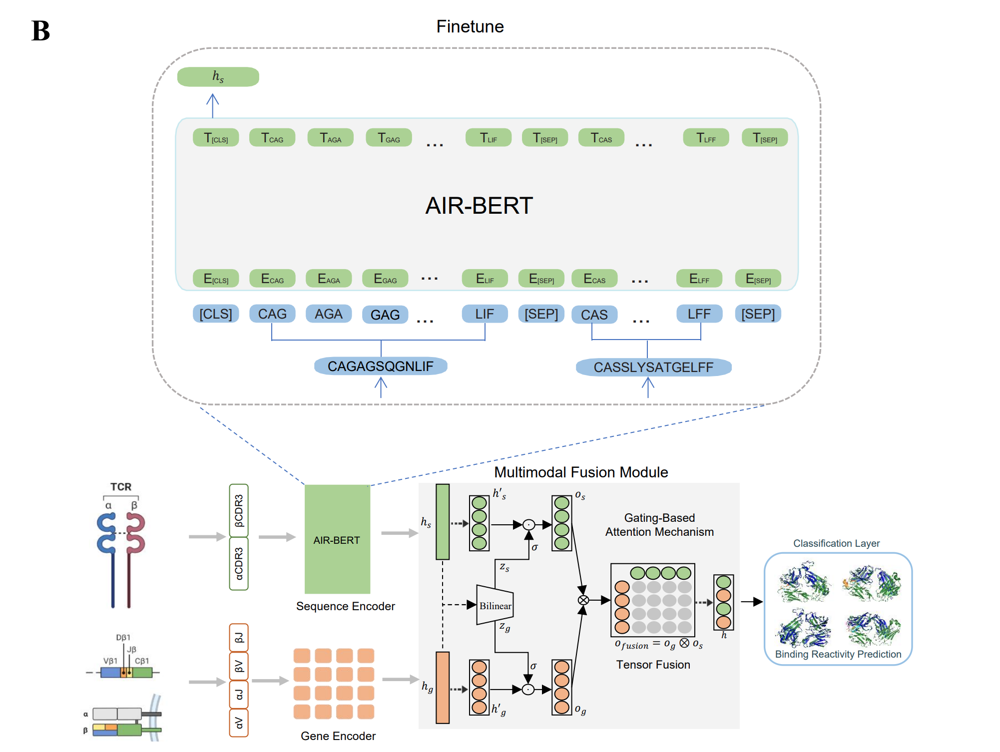

Hiüëã, I am a Second-year Computer Science Ph.D. student at Stony Brook University(SBU), where I am fortunate to be advised by Professor Chenyu You.
I received my B.S. degree from Huazhong University of Science and Technology(HUST) and my M.S. degree from Tsinghua University(THU).
Previously, I spent great time at OpenMMLab and Tencent AI Lab.
My research lies in machine learning and its applications to healthcare.

* indicates equal contribution (co-first authors)

Qin Ren, Yifan Wang, Ruogu Fang, Haibin Ling, Chenyu You
MICCAI 2025

Shanlin Sun*, Yifan Wang*, Hanwen Zhang*, Yifeng Xiong, Qin Ren, Ruogu Fang, Xiaohui Xie, Chenyu You
ICCV 2025

Yu Zhao*, Shan Xiong*, Qin Ren*, Jun Wang*, Min Li*, Lin Yang*, et al.
The Lancet Oncology, 2024

Fan Xu*, Yu Zhao*, Bingzhe Wu, Yueshan Huang, Qin Ren, Yang Xiao, Bing He, Jie Zheng, Jianhua Yao
AAAI 2024

Qin Ren*, Yu Zhao*, Bing He, Bingzhe Wu, Sijie Mai, Fan Xu, Yueshan Huang, Yonghong He, Junzhou Huang, Jianhua Yao
MICCAI 2023

Yang Xiao*, Yueshan Huang*, Yu Zhao*, Fan Xu, Qin Ren, Bing He, Jianhua Yao, Xiao Liu
BIBM 2023

During my internship at OpenMMLab, I was one of the main contributors to this repository, working on core implementations with Yixiao Fang, Yuan Liu, and Songyang Zhang.
- Conference Reviewer: MICCAI 2024, MICCAI 2025
- Journal Reviewer: TMI, BIB, TNNLS, Pattern Recognition
- Teaching Assistant: IAE 101 (Fall 2024), CSE 590 (Spring 2025)
- MICCAI 2025 NIH Registration Grant
- John Hennessy Fellowship
- AI Internship Excellence Award
- School Merit Student
- School Outstanding Graduate
- National Encouragement scholarship